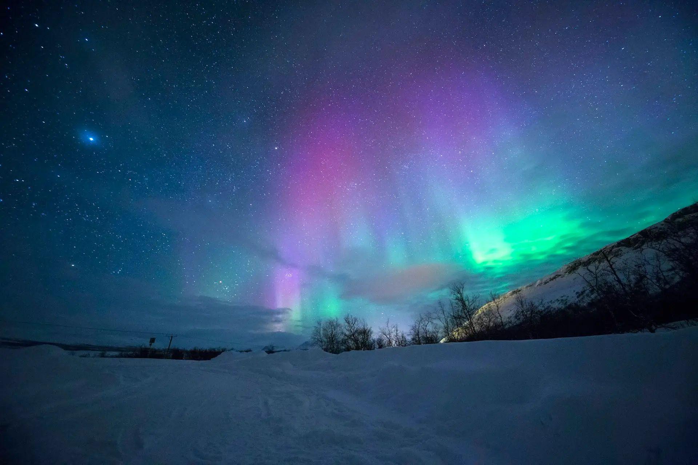

South Coast Icons
Seljalandsfoss, Skógafoss, dramatic coastlines and the legendary black sand beaches of Vík

Experience Iceland in one unforgettable week with a private driver-guide, custom route planning and time for glaciers, waterfalls, black sand beaches, volcanic landscapes and the Snæfellsnes Peninsula.
This tour is designed for travelers who want a complete Icelandic experience without rushing. Over seven days, you will explore the iconic Golden Circle, travel the dramatic South Coast with its waterfalls and black sand beaches, venture into the glacier region around Skaftafell, witness the floating icebergs of Jökulsárlón Glacier Lagoon and Diamond Beach, and discover the volcanic landscapes of the Snæfellsnes Peninsula.
Unlike shorter itineraries, this private journey gives you the luxury of time. Your driver-guide handles every road, every decision and every unexpected change in Icelandic weather, while you focus on the experience. The route is flexible, the stops are curated and the pace is yours to set.
Every detail of this seven-day expedition is shaped by your interests, the season and the conditions on the ground. That is the difference between a tour and a truly private travel experience.
A carefully designed expedition that takes you through Iceland's most iconic landscapes — from tectonic plates to glacier lagoons, black sand shores to volcanic peninsulas.
Seljalandsfoss, Skógafoss, dramatic coastlines and the legendary black sand beaches of Vík
Floating icebergs, crystal-clear ice on volcanic sand and the vast white expanse of Vatnajökull
Lava fields, basalt columns, geothermal areas and the raw geological power of Iceland's south
Iceland in miniature — mountains, lava fields, sea cliffs and views of Snæfellsjökull glacier
Each day is a chapter in your private expedition. Your driver-guide adapts the timing, stops and experiences to match your interests, the weather and the season.

Private pickup from Reykjavík or Keflavik. Begin your journey with the Golden Circle, including Þingvellir National Park, the Geysir geothermal area and Gullfoss waterfall, depending on arrival time and preferences.
Travel along the South Coast with your private driver-guide, stopping at Seljalandsfoss, Skógafoss, volcanic viewpoints and coastal landscapes before reaching the Vík area.

Explore Reynisfjara Black Sand Beach, basalt columns, lava fields and dramatic coastline before continuing toward Skaftafell or the glacier region.
Spend time around Jökulsárlón Glacier Lagoon and Diamond Beach, with floating icebergs, black sand, glacier views and the cinematic landscapes of southeast Iceland.


Return west through the South Coast at a relaxed pace, using the private format to stop at hidden viewpoints, waterfalls, canyons or seasonal locations depending on conditions.
Explore the Snæfellsnes Peninsula, often called Iceland in miniature, with mountains, lava fields, black churches, sea cliffs, fishing villages and views of Snæfellsjökull glacier.


Enjoy a flexible final day adapted to your departure time, with options for Reykjavík, Reykjanes Peninsula, scenic coastal stops or extra time in the west.
From walking behind waterfalls to watching icebergs drift through a glacial lagoon, every day brings a new encounter with Iceland's wild beauty.
Step behind Seljalandsfoss and feel the mist of Iceland's most iconic cascade from a different angle
Walk through Þingvellir where the North American and Eurasian tectonic plates visibly drift apart
Feel the power of Reynisfjara's Atlantic waves against dramatic basalt columns and volcanic shores
Witness floating icebergs calve from Breiðamerkurjökull and drift through the serene Glacier Lagoon
Explore Kirkjufell, lava fields, sea cliffs and the glacier-capped volcano that inspired Jules Verne
Enjoy local knowledge, flexible stops and a safe, relaxed pace with your own dedicated guide
Seven days give you the freedom to explore deeper, travel slower and discover more of what makes Iceland extraordinary.
See the South Coast without hurrying. Seven days allow you to linger at the places that move you and skip the ones that don't.
Get to Jökulsárlón and Diamond Beach with enough margin to enjoy them properly, not just a quick photo stop.
Include the volcanic landscapes, Kirkjufell and the glacier-capped peninsula that shorter tours simply cannot fit.
With seven days, your guide can shift plans when the weather changes, turning delays into discoveries.
Every stop, every route and every moment is shaped around your interests — not a fixed bus schedule.
Ideally paced for families, couples, small groups and photographers who want depth without exhaustion.
Every private itinerary is different. Your route, pace and experiences are shaped by your travel style, the season and what matters most to you.
The itinerary flexes with Icelandic conditions, ensuring safe and rewarding travel year-round.
Flexible evening routing when aurora conditions are favorable between September and March.
Extra time at golden hour locations, hidden waterfalls and dramatic coastal angles.
Shorter driving days, more frequent breaks and activities suited to all ages.
Premium hotel options, upgraded dining recommendations and a seamless experience.
Start from your hotel in Reykjavík, Keflavik Airport or anywhere along the route.
Add glacier hiking, ice cave exploration or snowmobiling when conditions allow.
Adjust daily distances to match your energy, interests and preferred pace.
Tailor the first and last days to your flight schedule and travel plans.
Your driver-guide is the difference between a good trip and an unforgettable one. Here is why traveling with a private guide elevates your seven-day journey.

Your private driver-guide stays with you for the full seven days, handling every road, every decision and every unexpected Icelandic weather change. You get local stories, insider knowledge and the freedom to explore without worrying about directions or road conditions.
Everything you need for a seamless private tour experience in Iceland.
This tour is available year-round. Each season offers a completely different character and set of experiences across Iceland's south and west.
Long daylight hours, easier road access, greener landscapes and the chance to explore the highlands and glacier areas in ideal conditions. Perfect for extended scenic days.
Dramatic snow-covered landscapes, possible Northern Lights, ice cave access (seasonal), frozen waterfalls and a quieter, more intimate atmosphere across the South Coast.
Fewer travelers, strong photography conditions, changing light and flexible weather planning. An excellent balance of accessibility and atmosphere.
Everything you need to know about the 7 day private tour in Iceland.
Yes. This tour is exclusively private. You and your travel companions will have your own driver-guide and vehicle for the entire seven days. You will not share your guide, itinerary or space with other groups.
Absolutely. The entire route, daily timing, stops, accommodation style and activities can be adapted to your preferences. Your driver-guide also adjusts things along the way based on weather, energy levels and spontaneous interests.
Yes. The tour can start directly from Keflavik Airport on your arrival day, or from your accommodation in Reykjavík. We tailor the pickup to your travel plans and flight schedule.
Yes. Seven days is an ideal duration for exploring the Golden Circle, South Coast, Jökulsárlón Glacier Lagoon, Diamond Beach and the Snæfellsnes Peninsula at a comfortable, unhurried pace.
Northern Lights sightings depend on solar activity, cloud cover and the season. Between September and March, your driver-guide can adjust evening plans when aurora conditions are promising, giving you the best possible chance.
Accommodation is not automatically included unless arranged during the booking process. We can recommend and help organize guesthouses, hotels or farm stays along the route to match your comfort level and budget.
Yes. Private tours are ideal for families. The pace, driving distance, stop frequency and activities can all be adjusted to suit children, teenagers or multi-generational groups.
Yes. Optional activities such as glacier hiking, ice cave tours, boat trips on the Glacier Lagoon, snowmobiling or a visit to the Blue Lagoon area can be arranged and added to your itinerary. These depend on the season and require advance coordination.

Share your travel dates, group size and interests, and we'll design a private one week Iceland itinerary around your pace.
Request a Custom Itinerary